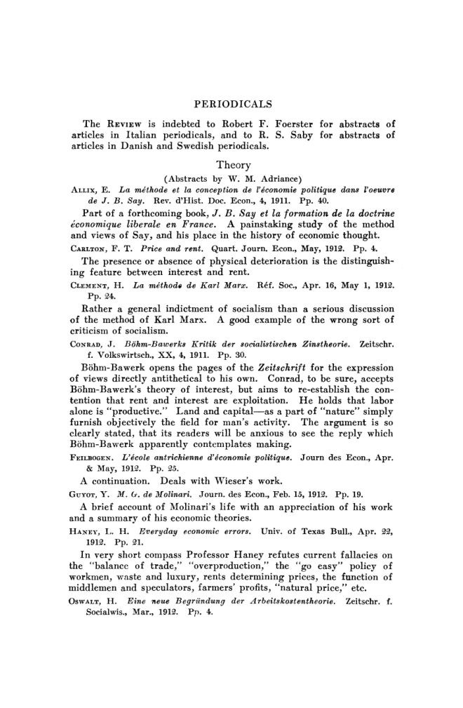

Setembro de 1912: a maré dos preços, o algodão e a tarifa
Leitura: 13 min
Fisher prevê que os preços mundiais seguirão subindo, Copeland lê o relatório da Tariff Board sobre o algodão, Wallace propõe uma tarifa que se ajusta sozinha e Young e Haney revisitam Jevons e o custo de oportunidade.


Nos Estados Unidos de 1911, segundo as contas de Irving Fisher, 92% de todas as transações eram feitas por cheque. É desse dado, quase escondido no meio de um artigo de 28 páginas, que Fisher, da Yale University, tira a sua previsão para os preços mundiais na abertura do número de setembro de 1912 da American Economic Review.
É o terceiro número do segundo ano da revista. Traz cinco artigos: a previsão de Fisher, duas leituras da política tarifária americana, uma por Melvin T. Copeland, sobre o relatório da Tariff Board para o algodão, e outra por Harry Brookings Wallace, com uma proposta de reforma; um balanço de Allyn A. Young sobre a Theory of Political Economy de Jevons; e a resposta de Lewis H. Haney à tese do custo de oportunidade. Completam a edição uma comunicação de Herbert E. Mills, cerca de sessenta resenhas organizadas por área, listas de livros novos, documentos oficiais, resumos de periódicos e as notas da redação.
A alta dos preços mundiais vai continuar?
Irving Fisher (Yale University) · “Will the Present Upward Trend of World Prices Continue?” · pp. 531–558
Fisher pergunta se a alta do custo de vida vai continuar e sustenta que a resposta exige separar o nível geral de preços, como a maré, dos preços particulares, como as ondas. Pela equação de trocas, o nível de preços depende só de cinco grandezas: a moeda em circulação, os depósitos movimentados por cheque, as velocidades de ambos e o volume de comércio; trustes, tarifas, sindicatos ou intermediários só contam na medida em que afetam essas cinco. Daí um primeiro erro que ele aponta no debate: supor que os preços cairão assim que a produção de ouro diminuir, quando o que importa é o estoque, não o fluxo anual.
Com dados de 1896 a 1911 para os Estados Unidos, mostra que os depósitos cresceram 7,3% ao ano e o uso de cheques 9,5%, contra 5,3% do comércio e 4,2% da moeda. Para o mundo do padrão-ouro, monta estimativas aproximadas a partir de relatórios do Comptroller, compensações bancárias, ferrovias, correios e navegação. Depois de ajustes que declara arbitrários, conclui que os preços vinham subindo cerca de 2,5% ao ano porque os meios de pagamento cresciam 7% e o comércio só 4,5%; o motor principal era a expansão dos depósitos.
Examina então cada fator. O ouro continuaria a acrescentar pelo menos 2% ao ano ao estoque monetário; a Índia e o Egito, que entesouravam metal, tenderiam a desentesourar com a difusão dos bancos, o que aumentaria a velocidade; o uso de cheques ainda se espalhava pela Europa continental e pelo Japão; e o comércio, por causa da ocupação das terras e do crescimento mais lento da população, tenderia a crescer mais devagar. Num cenário que chama de provável, os preços subiriam 2% ao ano, de 100 em 1911 para 134 em 1926; num cenário conservador, ficariam estáveis. Pelo cálculo de probabilidades, estima em menos de uma em cem a chance de que não subam em quinze anos.
Fisher admite interrupções por crises a cada década, como a de 1907. Conclui que o mundo verá por muitos anos uma maré de preços em rápida subida.
A tarifa do algodão protegia o quê?
Melvin T. Copeland (New York University) · “The Report of the Tariff Board on Cotton Manufactures” · pp. 559–567
Copeland examina o relatório da Tariff Board sobre as manufaturas de algodão, o Schedule I da tarifa americana, e sustenta que suas conclusões, se usadas na legislação, exigem reduções substanciais dos direitos. A investigação cobriu 81 fiações e tecelagens, com 5.210.836 fusos e 133.761 teares, cerca de um quinto do total do país, e apenas 17 fábricas de malhas. As comparações principais foram com os custos ingleses na fiação, tecelagem e acabamento, e com os alemães nas malhas. Como o algodão em rama não custava mais nos Estados Unidos e não pagava direito, só os custos de fabricação foram estudados.
Na fiação, a comissão comparou a fiação de anel americana com a fiação de mule inglesa, a técnica predominante em cada país, e confrontou a fábrica de menor custo de cada lado. Para os fios mais produzidos, o menor custo inglês, sem matéria-prima, era cerca de 73% do menor custo americano; com a matéria-prima, o fio americano saía só de 3,8% a 11,9% mais caro. Em alguns casos o direito chegava a quase seis vezes a diferença de custo de fabricação, o que leva Copeland a duvidar de que a tarifa beneficiasse muito os operários das fiações.
Na tecelagem, sem acesso aos livros ingleses, a comissão comparou preços. As importações de tecidos equivaliam a 1,79% da produção nacional em 1909-10. Em 78 tecidos comuns, os fabricantes americanos cobravam menos em 53 e o mesmo em dois; a produção por tecelão era, nos tecidos simples, às vezes cinco vezes maior que na Inglaterra, graças a máquinas e métodos adaptados. Copeland conclui que todos os direitos sobre tecidos deveriam ser reduzidos e muitos eliminados. No acabamento, o adicional de direito sobre o tecido cru costumava superar todo o custo do processo; nas malhas, o relatório lhe parece insuficiente, por não comparar técnicas equivalentes.
Copeland nota ainda que o preço ao consumidor era mais alto que no exterior por causa dos custos de distribuição, e que salários maiores não significavam, necessariamente, custo de mão de obra maior. Apesar das lacunas, julga o relatório útil e conclui que ele prova a necessidade de revisão genuína para baixo dos direitos sobre o algodão.
Para Copeland, o relatório prova que deve haver uma “verdadeira revisão para baixo dos direitos sobre os artigos de algodão”. (“it proves that there should be a genuine downward revision of the duties on cotton goods”)
E se o protegido pagasse pela proteção?
Harry Brookings Wallace (St. Louis) · “A Balanced Tariff” · pp. 568–575
Wallace parte de uma constatação política: há demanda insistente por redução da tarifa, e a revisão de um schedule por vez, então favorecida, tem vantagens sobre as revisões gerais, porque reduz o choque sobre a indústria e as trocas de votos. Mas ela traz um problema fiscal. Nas revisões gerais, uma perda de receita num item era compensada por aumentos em outros; revisando aos poucos e para baixo, a receita alfandegária cairia de forma contínua, e seria preciso indicar de onde viria o dinheiro.
A proposta é simples: todo fabricante ou produtor de um bem protegido pagaria um imposto federal de consumo igual a uma fração fixa, digamos 5%, do direito de importação sobre aquele bem, e uma comissão tarifária permanente receberia pedidos de revisão e faria recomendações ao Congresso. Wallace espera cinco efeitos. Os produtores que não precisassem de proteção pediriam a retirada do direito, limpando os itens mortos da tarifa. Os que tivessem proteção excessiva pediriam redução: com direito de 50%, o imposto custaria 2,5% do valor do produto; com 20%, apenas 1%. Monopólios protegidos, que hoje nada pagam pela proteção, teriam um ônus que cresce com o preço que desejam cobrar, o que os levaria em muitos casos a preferir preços menores.
O imposto também seria uma fonte grande e elástica de receita e, como imposto indireto, segura do ponto de vista constitucional. Com os dados do censo de manufaturas de 1905, Wallace estima que a produção protegida somava US$ 13.584 milhões e que o imposto teria rendido US$ 290.318.000; somado aos US$ 166.967.000 de direitos sobre os mesmos artigos, o total superaria os US$ 261.799.000 efetivamente arrecadados pela alfândega naquele ano. Bastaria, assim, um imposto de 1,5% dos direitos para manter a receita, o que permitiria reduzir ou abolir direitos sobre açúcar, lã, arroz e outros bens de primeira necessidade.
Wallace reconhece que o consumidor pagaria o imposto nos bens produzidos em concorrência, mas lembra que ele já paga os direitos atuais. Conclui que a tarifa equilibrada não abandona o princípio protecionista: confia menos nas estatísticas de custos comparados e mais no interesse dos próprios protegidos, que não quereriam pagar por mais proteção do que precisam.
O que resta da teoria de Jevons?
Allyn A. Young (Washington University, St. Louis) · “Jevons' Theory of Political Economy” · pp. 576–589
Young parte da quarta edição da Theory of Political Economy de W. Stanley Jevons, organizada pelo filho, H. S. Jevons, em 1911, e aproveita o aniversário de cinquenta anos do primeiro texto de Jevons sobre a teoria, enviado em 1862 à British Association, para reavaliar o livro. Reconstrói a origem das ideias: Jevons formou sua convicção lendo economia em Sydney, onde foi ensaiador da Casa da Moeda de 1854 a 1859, e já em cartas de 1860 ao irmão anunciava a lei da utilidade decrescente e uma nova teoria do capital e dos juros. O livro de 1871, segundo Young, pouco acrescenta ao que as cartas prometiam, e foi recebido com frieza na Inglaterra e com mais interesse no continente.
A tese central é que o livro é desigual e assistemático, mas importante. Young sustenta que a psicologia hedonista de Jevons pode ser separada de suas teorias de troca e distribuição sem perda essencial, e que o grau final de utilidade, embora próximo da utilidade marginal, é conceito mais preciso, independente da unidade de medida. A equação de trocas entre dois negociantes, porém, pressupõe a lei da indiferença, um só preço num mercado, o que equivale a supor uma moeda; e o conceito de corpo negociante, que trata grupos como indivíduos, contorna mais do que resolve o problema do mercado geral.
A parte que Young mais destaca é a teoria da distribuição dos últimos capítulos, pouco lida. Jevons definiu o capital como o estoque de subsistência dos trabalhadores e atribuiu a produtividade decrescente ao prazo do investimento, e não ao montante investido; por isso sua teoria dos juros, que poucos reconheceram como antecipação da teoria da produtividade marginal, fica mais próxima da superioridade técnica dos bens presentes de Böhm-Bawerk. Sua teoria dos salários como resíduo vem de tratar o trabalho como fator fixo.
Sobre o método, Young observa que o livro é matemático só na superfície: Jevons não era matemático hábil, e suas equações são algébricas. A influência é difícil de isolar, mas clara em Edgeworth e Wicksteed. Conclui que, embora Jevons não tenha feito a revolução que desejava, a teoria corrente seria outra sem ele, e o livro permanece entre os quatro ou cinco grandes da economia política inglesa do século XIX.
Young subscreve o juízo de Marshall de que “o livro melhoraria se a matemática fosse omitida, mas os diagramas mantidos”. (“the book would be improved if the mathematics were omitted, but the diagrams retained”)
A alternativa abandonada é um custo?
Lewis H. Haney (University of Texas) · “Opportunity Cost” · pp. 590–600
Haney parte de uma distinção que, a seu ver, nenhum economista manteve com coerência: o ponto de vista social e o individual. O conceito de custo, diz, foi o último a cair nessa confusão, e o principal responsável é H. J. Davenport, cujo artigo Cost and Its Significance saíra na revista em dezembro de 1911. Haney quer mostrar três coisas: que o raciocínio do custo de oportunidade incorre em petição de princípio; que a oportunidade não é custo em nenhum sentido que determine preços; e que a importância do ponto de vista do empresário foi exagerada.
Para a primeira tese, usa o exemplo do próprio debate. Um empresário vende chapéus a US$ 2, com desembolso e esforço equivalentes a US$ 1,75; com o mesmo esforço, poderia vender sapatos a US$ 1,90. O teórico da oportunidade diria que o custo do chapéu é US$ 1,90, porque abaixo disso o empresário mudaria de ramo. Haney responde que ganho e vantagem são conceitos líquidos, que só existem depois de conhecidos os preços; usar o preço dos sapatos para explicar o preço dos chapéus é tomar como dado aquilo que se pretende explicar. A margem verdadeira, acrescenta, é aquela em que a venda apenas cobre as despesas, e o produtor de US$ 1,90 ainda ganha 15 centavos acima do custo absoluto.
Para a segunda, critica os exemplos de Davenport, a criança que larga a pera para salvar o pêssego e o comprador que escolhe um livro em vez de uma faca. O que se sacrifica, diz, é o dólar ganho com o trabalho, não a faca; a escolha é apenas uma comparação de utilidades. Dois produtores com o mesmo esforço, um com alternativa e outro sem, recebem o mesmo preço e têm o mesmo ganho. A oportunidade é um índice, não uma força que limita a oferta; o custo, em sentido próprio, é o sacrifício necessário para criar utilidades.
Na terceira parte, Haney liga o custo de oportunidade a uma noção ultraindividualista de produção, que trataria como produtivo qualquer ganho individual, inclusive o roubo, e a uma análise que não seria de fato competitiva. Conclui que o custo do empresário deve ser procurado nos riscos da direção responsável de um negócio, um custo fundamental que limita a oferta como o esforço do trabalho.
O que mais há na edição?
Entre as resenhas, Richard T. Ely trata dos Principles of Economics de F. W. Taussig; Allyn A. Young, de dois livros sobre trustes; Wesley C. Mitchell, do estudo de preços de Walter T. Layton; e Jeffrey R. Brackett, de Grants in Aid, de Sidney Webb. Na comunicação, Mills cita o diário de William Owen, de 1824, para sustentar que os Owen usavam a palavra socialista antes de 1833. Os documentos abrem com uma estimativa do balanço de pagamentos americano no ano fiscal de 1910, e as notas anunciam o Fifteenth International Congress on Hygiene and Demography, em Washington, de 23 a 28 de setembro.
Na minha leitura
Na minha leitura, o número inteiro gira em torno de uma mesma pergunta de método: o que entra na conta. Fisher insiste que o nível de preços depende do estoque de moeda e de depósitos, e não do fluxo anual de ouro; Copeland mostra que a comparação de custos depende de quais fábricas se comparam e de como se rateiam as despesas gerais; Wallace troca a estatística de custos pelo interesse dos próprios protegidos; Haney discute se a alternativa abandonada pertence ou não ao custo. Em todos os casos, a conclusão muda conforme a definição adotada antes de qualquer número.
Glossário
- Equação de trocas
- identidade MV + M'V' = PT, que liga moeda, depósitos, suas velocidades, nível de preços e volume de comércio.
- Depósitos sujeitos a cheque
- saldos bancários movimentados por cheque; na notação de Fisher, M'.
- Padrão-ouro
- regime em que a unidade monetária é definida por um peso fixo de ouro.
- Tariff Board
- comissão criada pelo presidente Taft para levantar custos de produção e orientar a revisão da tarifa.
- Custo de conversão
- custo de fabricação excluída a matéria-prima, termo usado no relatório sobre o algodão.
- Custo de oportunidade
- valor da melhor alternativa abandonada ao escolher um uso para recursos.
- Grau final de utilidade
- termo de Jevons para a utilidade da última porção consumida de um bem, por unidade.
Artigos (5)
- Will the Present Upward Trend of World Prices Continue? — Irving Fisher (Yale University) (pp. 531–558) · resenha acima · comentário completo · JSTOR
- The Report of the Tariff Board on Cotton Manufactures — Melvin T. Copeland (New York University) (pp. 559–567) · resenha acima · JSTOR
- A Balanced Tariff — Harry Brookings Wallace (St. Louis) (pp. 568–575) · resenha acima · JSTOR
- Jevons' “Theory of Political Economy” — Allyn A. Young (Washington University, St. Louis) (pp. 576–589) · resenha acima · comentário completo · JSTOR
- Opportunity Cost — Lewis H. Haney (University of Texas) (pp. 590–600) · resenha acima · JSTOR
Resenhas (54)
- F. W. Taussig, Principles of Economics — Richard T. Ely (pp. 601–605). Resenha do tratado de Taussig em dois volumes. JSTOR
- J. A. Hobson, The Science of Wealth — Alvin S. Johnson (pp. 605–606). Resenha de um livro de divulgação da Home University Library. JSTOR
- The Theory of Distribution and Consumption — C. W. Mixter (pp. 606–607). Resenha de um tratado inglês sobre distribuição e consumo. JSTOR
- Kiichiro Soda, Die logische Natur der Wirtschaftsgesetze — Carl E. Parry (pp. 607–608). Resenha de um estudo sobre a natureza lógica das leis econômicas. JSTOR
- Alexander Berner, Die Theorie vom Arbeitslohn — A. N. Holcombe (pp. 609). Resenha de um estudo alemão sobre a teoria dos salários. JSTOR
- Mary Verhoeff, The Kentucky Mountains: Transportation and Commerce, 1750-1911 — E. L. Bogart (pp. 611–612). Resenha de um estudo de história econômica de uma região carbonífera. JSTOR
- William S. Culbertson, Alexander Hamilton — Worthington C. Ford (pp. 612–613). Resenha de um ensaio premiado pela Yale University sobre Hamilton. JSTOR
- Oliver Morton Dickerson, American Colonial Government, 1696-1765 — Charles M. Andrews (pp. 613–615). Resenha de um estudo sobre o Board of Trade britânico e as colônias americanas. JSTOR
- Robert Stout e J. Logan Stout, New Zealand — J. E. LeRossignol (pp. 615–616). Resenha de um livro sobre a Nova Zelândia e sua legislação social. JSTOR
- J. Loutchisky, L'État des classes agricoles en France à la veille de la Révolution — Robert P. Shepherd (pp. 616–617). Resenha de um estudo sobre as classes agrícolas francesas antes de 1789. JSTOR
- Thomas Nixon Carver, Principles of Rural Economics — Henry C. Taylor (pp. 620–624). Resenha de um manual de economia rural. JSTOR
- Report of the Commissioner of Corporations on Water-Power Development in the United States — H. S. Person (pp. 624–625). Resenha do relatório do Bureau of Corporations sobre a energia hidráulica e a concentração de sua propriedade. JSTOR
- Argument of the Honorable Elihu Root (North Atlantic Coast Fisheries Arbitration), org. James Brown Scott — Carl Russell Fish (pp. 626). Resenha da argumentação americana no arbitramento das pescarias do Atlântico Norte, em Haia, em 1910. JSTOR
- Progress and Prosperity — Ernest L. Bogart (pp. 627–629). Resenha de um volume de mais de 800 páginas sobre progresso e prosperidade. JSTOR
- Leo Greendlinger, Accountancy Problems with Solutions — John C. Duncan (pp. 632–634). Resenha de um livro de problemas de contabilidade com soluções. JSTOR
- Timber Bonds — Walter E. Lagerquist (pp. 634–635). Resenha de um livro sobre títulos lastreados em madeira. JSTOR
- Les Obligations Américaines et le Portefeuille Français — Roger W. Babson (pp. 635–636). Resenha de um livro que apresenta os títulos americanos ao investidor francês. JSTOR
- Seymour Walton e Stephen W. Gilman, Auditing and Cost Accounts — W. T. Jackman (pp. 636–638). Resenha de um manual de auditoria e contabilidade de custos. JSTOR
- Henry Floy, Valuation of Public Utility Properties — E. W. Bemis (pp. 640–642). Resenha de um livro sobre a avaliação de empresas de serviços públicos. JSTOR
- Bruce Wyman, Control of the Market; Theodore E. Burton, Corporations and the State — Allyn A. Young (pp. 643–645). Resenha conjunta de dois livros sobre trustes e controle das sociedades. JSTOR
- Horace LaFayette Wilgus, Private Corporations — Maurice H. Robinson (pp. 645–646). Resenha de um tratado breve sobre o aspecto jurídico das sociedades privadas. JSTOR
- Hermann Levy, Monopoly and Competition — Francis Walker (pp. 646–648). Resenha de um estudo sobre monopólio e concorrência na indústria inglesa. JSTOR
- Paul de Rousiers, Les Syndicats industriels de producteurs en France et à l'étranger — W. S. Stevens (pp. 648–649). Resenha da segunda edição de um estudo sobre cartéis de produtores. JSTOR
- Richard Passow, Materialien für das wirtschaftswissenschaftliche Studium. I, Kartelle des Bergbaues — Abraham Berglund (pp. 649–650). Resenha de uma coletânea de documentos sobre cartéis da mineração. JSTOR
- Frank T. Stockton, The Closed Shop in American Trade Unions — Frank T. Carlton (pp. 651–652). Resenha de um estudo da Johns Hopkins sobre a exclusividade sindical. JSTOR
- Sue Ainslie Clark e Edith Wyatt, Making Both Ends Meet — Edith Abbott (pp. 652–654). Resenha de um estudo sobre a renda e os gastos de trabalhadoras de Nova York. JSTOR
- Washington Gladden, The Labor Question — R. F. Hoxie (pp. 654). Resenha de um pequeno livro sobre a questão operária. JSTOR
- Banking Reform, org. J. Laurence Laughlin — Fred Rogers Fairchild (pp. 657–659). Resenha de um livro de divulgação sobre a reforma bancária, publicado pela National Citizens' League. JSTOR
- Roger W. Babson e Ralph May, Commercial Paper — David Kinley (pp. 659–660). Resenha de um manual sobre títulos comerciais para comerciantes, banqueiros e investidores. JSTOR
- Walter T. Layton, An Introduction to the Study of Prices — Wesley C. Mitchell (pp. 660–661). Resenha de uma introdução ao estudo dos preços, com índices desde 1800. JSTOR
- Agustín Ross, Chile 1851-1910 — David Kinley (pp. 661–662). Resenha de um livro sobre sessenta anos de questões monetárias e bancárias do Chile. JSTOR
- Der landwirtschaftliche Kredit und seine durchgreifende Verbesserung — I. M. Rubinow (pp. 662–665). Resenha de um folheto alemão sobre o crédito agrícola. JSTOR
- Henry Sagnier, Le Crédit agricole en France — Carl W. Thompson (pp. 665–666). Resenha de um livro sobre o crédito agrícola na França. JSTOR
- Willard Eugene Hotchkiss, The Judicial Work of the Comptroller of the Treasury — C. J. Bullock (pp. 668–670). Resenha de um estudo de direito administrativo sobre o Comptroller of the Treasury. JSTOR
- Franz Meisel, Moral und Technik bei der Veranlagung der preussischen Einkommensteuer — T. S. Adams (pp. 670–672). Resenha de um estudo sobre o lançamento do imposto de renda prussiano. JSTOR
- Jeremiah W. Jenks e W. Jett Lauck, The Immigration Problem — Prescott F. Hall (pp. 675–677). Resenha de um livro sobre a imigração, com apêndice estatístico. JSTOR
- Arthur Newsholme, The Declining Birth-Rate — James A. Field (pp. 677–678). Resenha de um folheto sobre o declínio da natalidade. JSTOR
- Werner Sombart, Die Zukunft der Juden — E. A. Goldenweiser (pp. 678–679). Resenha de um ensaio de Sombart. JSTOR
- Thomas Nixon Carver, The Religion Worth Having — A. B. Wolfe (pp. 679–681). Resenha de um pequeno livro de Carver sobre religião. JSTOR
- Edward T. Devine, The Spirit of Social Work — Herbert Croly (pp. 682). Resenha de um livro sobre o trabalho social. JSTOR
- Samuel George Smith, Social Pathology — Ulysses G. Weatherly (pp. 682–683). Resenha de um livro sobre patologia social. JSTOR
- The Philanthropic Work of Josephine Shaw Lowell, org. William Rhinelander Stewart — Emily Greene Balch (pp. 684–685). Resenha de uma biografia com escritos públicos e cartas de Josephine Shaw Lowell. JSTOR
- Social Conditions in Provincial Towns, org. Mrs. Bernard Bosanquet — Carol Aronovici (pp. 685–686). Resenha de uma série de estudos sobre condições sociais em cidades inglesas e escocesas. JSTOR
- Sidney Webb, Grants in Aid: A Criticism and a Proposal — Jeffrey R. Brackett (pp. 686–687). Resenha de um livro sobre as transferências do governo central às autoridades locais. JSTOR
- Année Sociale Internationale, 1912 — R. F. F. (pp. 687–688). Resenha de um anuário de questões sociais. JSTOR
- James M. Hudnut, Studies in Practical Life Insurance — William H. Price (pp. 689–690). Resenha de um estudo sobre os métodos de uma seguradora de vida. JSTOR
- Frederick L. Hoffman, Insurance Science and Economics — John Bauer (pp. 690–692). Resenha de um livro sobre problemas atuais da administração de seguros. JSTOR
- Die Vorarbeiten zur Herstellung gemeinsamer deutscher Sterblichkeitstafeln — F. S. Crum (pp. 692–696). Resenha dos trabalhos preparatórios para tábuas de mortalidade alemãs comuns. JSTOR
- A. S. Comyns Carr, W. H. Stuart Garnett e J. H. Taylor, National Insurance; I. M. Rubinow, Studies in Workmen's Insurance — A. W. Whitney (pp. 696–698). Resenha de um comentário à lei inglesa de seguro nacional e de um estudo sobre seguro operário na Itália, Rússia e Espanha. JSTOR
- H. Norman Barnett e Cecil E. Shaw, Accidental Injuries to Workmen — W. C. Hanson (pp. 698–700). Resenha de um livro sobre acidentes de trabalho e a lei de indenização de 1906. JSTOR
- Alfred Manes, Grundzüge des Versicherungswesens — W. F. Gephart (pp. 700–701). Resenha de um manual alemão de seguros. JSTOR
- Adolph von Wenckstern, Leitfaden zu Vorlesungen über Geschichte und Methode der nationalökonomischen und sozialistischen Theorien — J. E. Le Rossignol (pp. 703–704). Resenha de um roteiro de aulas sobre teorias econômicas e socialistas. JSTOR
- Franz Rehbein, Das Leben eines Landarbeiters, org. Paul Göhre — John Graham Brooks (pp. 704–705). Resenha da autobiografia de um trabalhador rural alemão. JSTOR
- Edward Bunnell Phelps, The Mortality of Alcohol — W. B. Bailey (pp. 707–709). Resenha de uma estimativa estatística das mortes associadas ao álcool nos Estados Unidos. JSTOR
Novos livros (17)
- New Books (teoria e sua história) — redação (pp. 610). Lista de lançamentos de teoria e história do pensamento. JSTOR
- New Books (história econômica e geografia) — redação (pp. 617–620). Lista de lançamentos de história econômica e geografia. JSTOR
- New Books (agricultura, mineração, florestas e pesca) — redação (pp. 626–627). Lista de lançamentos da seção. JSTOR
- New Books — redação (pp. 627). Lista de lançamentos. JSTOR
- New Books (transportes) — redação (pp. 629–630). Lista de lançamentos sobre transportes. JSTOR
- New Books (comércio) — redação (pp. 630–632). Lista de lançamentos sobre comércio. JSTOR
- New Books (contabilidade, investimentos e bolsas) — redação (pp. 638–640). Lista de lançamentos da seção. JSTOR
- New Books (capital e organização capitalista) — redação (pp. 650–651). Lista de lançamentos da seção. JSTOR
- New Books (trabalho e organizações de trabalhadores) — redação (pp. 655–657). Lista de lançamentos da seção. JSTOR
- New Books (moeda, preços, crédito e bancos) — redação (pp. 666–668). Lista de lançamentos da seção. JSTOR
- New Books (finanças públicas, tributação e tarifa) — redação (pp. 672–675). Lista de lançamentos da seção. JSTOR
- New Books (população e migração) — redação (pp. 679). Lista de lançamentos da seção. JSTOR
- New Books (problemas e reformas sociais) — redação (pp. 688–689). Lista de lançamentos da seção. JSTOR
- New Books (seguros e pensões) — redação (pp. 701–702). Lista de lançamentos da seção. JSTOR
- New Books (pauperismo e caridade) — redação (pp. 702). Lista de lançamentos da seção. JSTOR
- New Books (socialismo e cooperativas) — redação (pp. 705–707). Lista de lançamentos da seção. JSTOR
- New Books (estatística) — redação (pp. 709). Lista de lançamentos de estatística. JSTOR
Documentos, periódicos e notas (4)
- Comunicação — Herbert E. Mills (Vassar College) (pp. 702). Mills cita o diário de William Owen, de 1824, para mostrar que os Owen já usavam a palavra socialista antes da primeira ocorrência impressa conhecida, de 1833. JSTOR
- Documents, Reports, and Legislation — redação (pp. 710–735). Documentos oficiais, a começar por uma estimativa do balanço de pagamentos dos Estados Unidos no ano fiscal de 1910. JSTOR
- Periodicals — redação (pp. 736–774). Resumos de artigos de periódicos, por área. JSTOR
- Notes — redação (pp. 775–782). Notas da redação, com o programa do congresso internacional de higiene e demografia de Washington. JSTOR
Fontes
- Will the Present Upward Trend of World Prices Continue? (pp. 531–558). JSTOR · Internet Archive (PDF)
- The Report of the Tariff Board on Cotton Manufacturers (pp. 559–567). JSTOR · Internet Archive (PDF)
- A Balanced Tariff (pp. 568–575). JSTOR · Internet Archive (PDF)
- Jevons' "Theory of Political Economy." (pp. 576–589). JSTOR · Internet Archive (PDF)
- Opportunity Cost (pp. 590–600). JSTOR · Internet Archive (PDF)
- [untitled] The American Economic Review, (1912-09-01), pages 601-605 (pp. 601–605). JSTOR · Internet Archive (PDF)
- [untitled] The American Economic Review, (1912-09-01), pages 605-606 (pp. 605–606). JSTOR · Internet Archive (PDF)
- [untitled] The American Economic Review, (1912-09-01), pages 606-607 (pp. 606–607). JSTOR · Internet Archive (PDF)
- [untitled] The American Economic Review, (1912-09-01), pages 607-608 (pp. 607–608). JSTOR · Internet Archive (PDF)
- [untitled] The American Economic Review (1912-09-01), page 609 (pp. 609). JSTOR · Internet Archive (PDF)
- New Books (pp. 610). JSTOR · Internet Archive (PDF)
- [untitled] The American Economic Review, (1912-09-01), pages 611-612 (pp. 611–612). JSTOR · Internet Archive (PDF)
- [untitled] The American Economic Review, (1912-09-01), pages 612-613 (pp. 612–613). JSTOR · Internet Archive (PDF)
- [untitled] The American Economic Review, (1912-09-01), pages 613-615 (pp. 613–615). JSTOR · Internet Archive (PDF)
- [untitled] The American Economic Review, (1912-09-01), pages 615-616 (pp. 615–616). JSTOR · Internet Archive (PDF)
- [untitled] The American Economic Review, (1912-09-01), pages 616-617 (pp. 616–617). JSTOR · Internet Archive (PDF)
- New Books (pp. 617–620). JSTOR · Internet Archive (PDF)
- [untitled] The American Economic Review, (1912-09-01), pages 620-624 (pp. 620–624). JSTOR · Internet Archive (PDF)
- [untitled] The American Economic Review, (1912-09-01), pages 624-625 (pp. 624–625). JSTOR · Internet Archive (PDF)
- [untitled] The American Economic Review (1912-09-01), page 626 (pp. 626). JSTOR · Internet Archive (PDF)
- New Books (pp. 626–627). JSTOR · Internet Archive (PDF)
- New Books (pp. 627). JSTOR · Internet Archive (PDF)
- [untitled] The American Economic Review, (1912-09-01), pages 627-629 (pp. 627–629). JSTOR · Internet Archive (PDF)
- New Books (pp. 629–630). JSTOR · Internet Archive (PDF)
- New Books (pp. 630–632). JSTOR · Internet Archive (PDF)
- [untitled] The American Economic Review, (1912-09-01), pages 632-634 (pp. 632–634). JSTOR · Internet Archive (PDF)
- [untitled] The American Economic Review, (1912-09-01), pages 634-635 (pp. 634–635). JSTOR · Internet Archive (PDF)
- [untitled] The American Economic Review, (1912-09-01), pages 635-636 (pp. 635–636). JSTOR · Internet Archive (PDF)
- [untitled] The American Economic Review, (1912-09-01), pages 636-638 (pp. 636–638). JSTOR · Internet Archive (PDF)
- New Books (pp. 638–640). JSTOR · Internet Archive (PDF)
- [untitled] The American Economic Review, (1912-09-01), pages 640-642 (pp. 640–642). JSTOR · Internet Archive (PDF)
- [untitled] The American Economic Review, (1912-09-01), pages 643-645 (pp. 643–645). JSTOR · Internet Archive (PDF)
- [untitled] The American Economic Review, (1912-09-01), pages 645-646 (pp. 645–646). JSTOR · Internet Archive (PDF)
- [untitled] The American Economic Review, (1912-09-01), pages 646-648 (pp. 646–648). JSTOR · Internet Archive (PDF)
- [untitled] The American Economic Review, (1912-09-01), pages 648-649 (pp. 648–649). JSTOR · Internet Archive (PDF)
- [untitled] The American Economic Review, (1912-09-01), pages 649-650 (pp. 649–650). JSTOR · Internet Archive (PDF)
- New Books (pp. 650–651). JSTOR · Internet Archive (PDF)
- [untitled] The American Economic Review, (1912-09-01), pages 651-652 (pp. 651–652). JSTOR · Internet Archive (PDF)
- [untitled] The American Economic Review, (1912-09-01), pages 652-654 (pp. 652–654). JSTOR · Internet Archive (PDF)
- [untitled] The American Economic Review (1912-09-01), page 654 (pp. 654). JSTOR · Internet Archive (PDF)
- New Books (pp. 655–657). JSTOR · Internet Archive (PDF)
- [untitled] The American Economic Review, (1912-09-01), pages 657-659 (pp. 657–659). JSTOR · Internet Archive (PDF)
- [untitled] The American Economic Review, (1912-09-01), pages 659-660 (pp. 659–660). JSTOR · Internet Archive (PDF)
- [untitled] The American Economic Review, (1912-09-01), pages 660-661 (pp. 660–661). JSTOR · Internet Archive (PDF)
- [untitled] The American Economic Review, (1912-09-01), pages 661-662 (pp. 661–662). JSTOR · Internet Archive (PDF)
- [untitled] The American Economic Review, (1912-09-01), pages 662-665 (pp. 662–665). JSTOR · Internet Archive (PDF)
- [untitled] The American Economic Review, (1912-09-01), pages 665-666 (pp. 665–666). JSTOR · Internet Archive (PDF)
- New Books (pp. 666–668). JSTOR · Internet Archive (PDF)
- [untitled] The American Economic Review, (1912-09-01), pages 668-670 (pp. 668–670). JSTOR · Internet Archive (PDF)
- [untitled] The American Economic Review, (1912-09-01), pages 670-672 (pp. 670–672). JSTOR · Internet Archive (PDF)
- New Books (pp. 672–675). JSTOR · Internet Archive (PDF)
- [untitled] The American Economic Review, (1912-09-01), pages 675-677 (pp. 675–677). JSTOR · Internet Archive (PDF)
- [untitled] The American Economic Review, (1912-09-01), pages 677-678 (pp. 677–678). JSTOR · Internet Archive (PDF)
- [untitled] The American Economic Review, (1912-09-01), pages 678-679 (pp. 678–679). JSTOR · Internet Archive (PDF)
- New Books (pp. 679). JSTOR · Internet Archive (PDF)
- [untitled] The American Economic Review, (1912-09-01), pages 679-681 (pp. 679–681). JSTOR · Internet Archive (PDF)
- [untitled] The American Economic Review (1912-09-01), page 682 (pp. 682). JSTOR · Internet Archive (PDF)
- [untitled] The American Economic Review, (1912-09-01), pages 682-683 (pp. 682–683). JSTOR · Internet Archive (PDF)
- [untitled] The American Economic Review, (1912-09-01), pages 684-685 (pp. 684–685). JSTOR · Internet Archive (PDF)
- [untitled] The American Economic Review, (1912-09-01), pages 685-686 (pp. 685–686). JSTOR · Internet Archive (PDF)
- [untitled] The American Economic Review, (1912-09-01), pages 686-687 (pp. 686–687). JSTOR · Internet Archive (PDF)
- [untitled] The American Economic Review, (1912-09-01), pages 687-688 (pp. 687–688). JSTOR · Internet Archive (PDF)
- New Books (pp. 688–689). JSTOR · Internet Archive (PDF)
- [untitled] The American Economic Review, (1912-09-01), pages 689-690 (pp. 689–690). JSTOR · Internet Archive (PDF)
- [untitled] The American Economic Review, (1912-09-01), pages 690-692 (pp. 690–692). JSTOR · Internet Archive (PDF)
- [untitled] The American Economic Review, (1912-09-01), pages 692-696 (pp. 692–696). JSTOR · Internet Archive (PDF)
- [untitled] The American Economic Review, (1912-09-01), pages 696-698 (pp. 696–698). JSTOR · Internet Archive (PDF)
- [untitled] The American Economic Review, (1912-09-01), pages 698-700 (pp. 698–700). JSTOR · Internet Archive (PDF)
- [untitled] The American Economic Review, (1912-09-01), pages 700-701 (pp. 700–701). JSTOR · Internet Archive (PDF)
- New Books (pp. 701–702). JSTOR · Internet Archive (PDF)
- New Books (pp. 702). JSTOR · Internet Archive (PDF)
- [Communication] (pp. 702). JSTOR · Internet Archive (PDF)
- [untitled] The American Economic Review, (1912-09-01), pages 703-704 (pp. 703–704). JSTOR · Internet Archive (PDF)
- [untitled] The American Economic Review, (1912-09-01), pages 704-705 (pp. 704–705). JSTOR · Internet Archive (PDF)
- New Books (pp. 705–707). JSTOR · Internet Archive (PDF)
- [untitled] The American Economic Review, (1912-09-01), pages 707-709 (pp. 707–709). JSTOR · Internet Archive (PDF)
- New Books (pp. 709). JSTOR · Internet Archive (PDF)
- Documents, Reports, and Legislation (pp. 710–735). JSTOR · Internet Archive (PDF)
- Periodicals (pp. 736–774). JSTOR · Internet Archive (PDF)
- Notes (pp. 775–782). JSTOR · Internet Archive (PDF)
- Sumário da edição no JSTOR: The American Economic Review, vol. 2, nº 3.
Documento em domínio público (EUA, publicado antes de 1931), via JSTOR Early Journal Content e Internet Archive. Resumo e comentário do autor deste site, sem afiliação com a American Economic Association. Encontrou um erro? Escreva: a correção é publicada no próprio texto, com data.
← Nº 119 · Junho de 1912: a tarifa da lã, a arte de gastar e a equação de trocas Nº 121 · Dezembro de 1912: o que é preço, de onde vêm os juros →